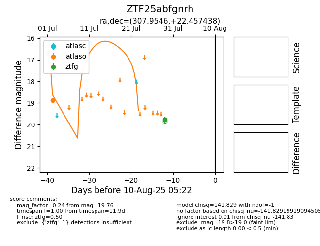

Target ZTF25abfgnrh at 2025-08-10 05:22, see:
FINK: fink-portal.org/ZTF25abfgnrh
Lasair: lasair-ztf.lsst.ac.uk/objects/ZTF25abfgnrh
ALeRCE: alerce.online/object/ZTF25abfgnrh
alt names
ZTF25abfgnrh (ztf,fink)
coordinates:
equatorial (ra, dec) = (307.9546,+22.45744)
galactic (l, b) = (64.7212,-10.05851)
photometry
last atlaso=18.88, ztfg=19.76
2 atlaso, 1 ztfg detections
